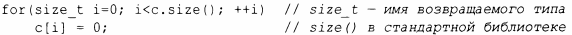
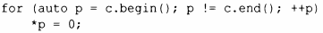
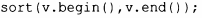
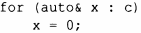

⇐5.4.1 Сравнения 5.4.3 Операции ввода-вывода⇒
Если только у вас нет по-настоящему веской причины поступать иначе, проектируйте контейнеры в стиле контейнеров стандартной библиотеки (глава 11, "Контейнеры"). В частности, сделайте контейнер безопасным с точки зрения ресурсов, реализуя его как дескриптор с соответствующими существенными операциями (§5.1.1, §5.2).
Контейнеры стандартной библиотеки знают количество хранящихся в них элементов, и мы можем получить его с помощью вызова size ().Например:
Однако вместо обхода контейнеров с ислользованием индексов от О до size () стандартные алгоритмы (глава 12, "Алгоритмы") лолагаются на лонятие последовательностей, ограниченных ларами итераторов:
Здесь с. begin () является итератором, указывающим на лервый элемент с, а с. end () указывает на элемент за лоследним элементом с. Подобно указателям, итераторы лоддерживают олераторы ++ для лерехода к следующему элементу и * - для достуnа к значению указываемого элемента. Такая модель итератора (§ 12.3) nозволяет обеслечить большую обобщенность и эффективность. Итераторы ислользуются для лередачи лоследовательностей алгоритмам стандартной библиотеки. Наnример:
С лодробностями и другими олерациями с контейнерами можно ознакомиться в главах 11, "Контейнеры", и 12, "Алгоритмы".
Еще одно средство неявного обхода всех элементов контейнера - цикл for ло диалазону:
Здесь с. begin ( ) и с. end ( ) исnользуются неявно; этот цикл грубо эквивалентен более явному циклу.